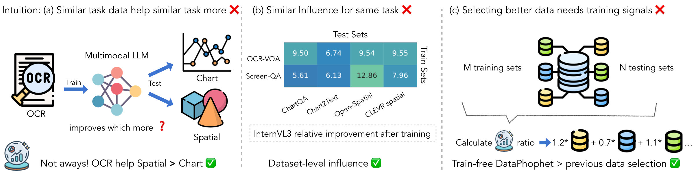
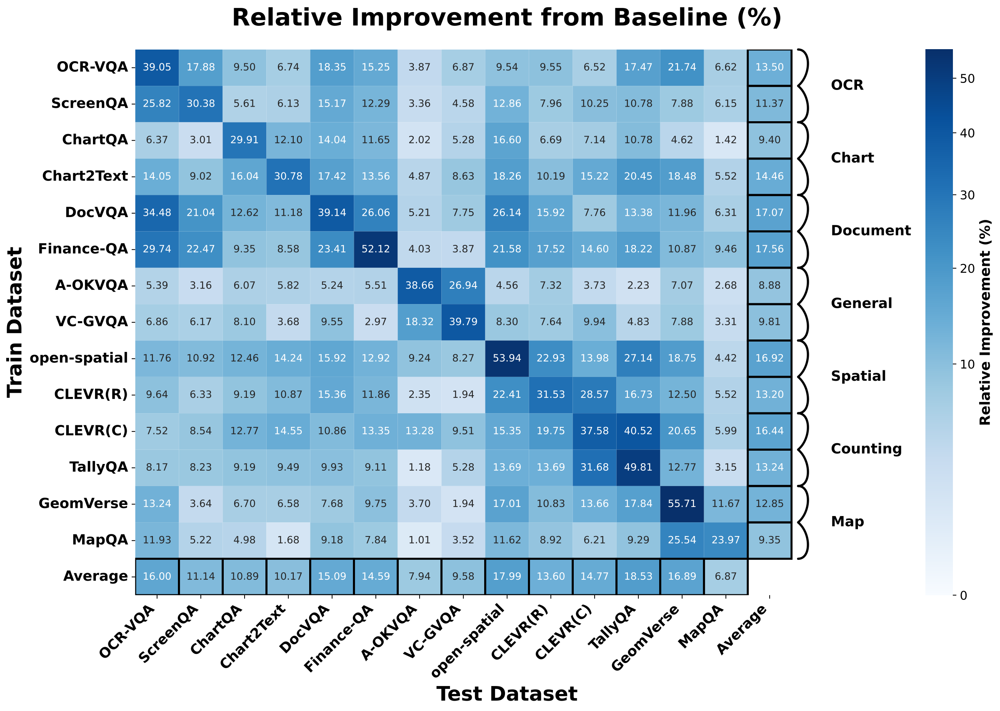
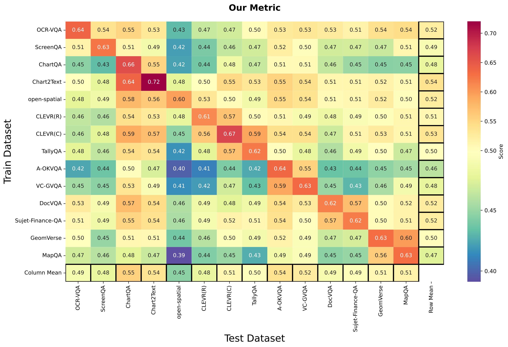
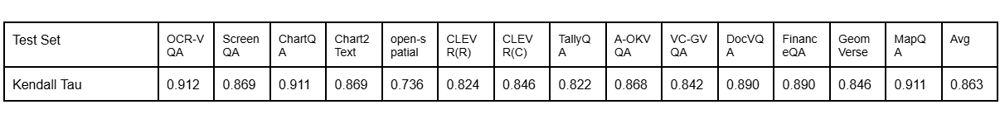

14
Source/target datasets
ICLR 2026 Submission
DataProphet predicts which supervision datasets will help a target benchmark before any training. It combines multimodal similarity, perplexity, and diversity into a training-free transfer score.
Source/target datasets
Task families
Kendall's tau (avg)
Synthetic data gain
Conventional data selection for multimodal LLMs often follows intuitive task similarity, but this paper shows that intuition is unreliable for predicting transfer gains. The authors evaluate 14 vision-language datasets across 7 task families and find that influence is asymmetric and dataset-specific. DataProphet introduces a simple training-free metric that integrates question/answer/image similarity, multimodal perplexity, and source diversity to predict transfer ranking. The predicted rankings strongly correlate with actual fine-tuning outcomes (Kendall's tau 0.860), and DataProphet-guided selection improves average performance over uniform and training-based baselines under fixed compute budgets.
OCR supervision can improve spatial reasoning more than chart tasks. Transfer cannot be inferred from high-level task labels alone.
The gain from train -> test is not symmetric: Deltas->t and Deltat->s can differ substantially.
DataProphet reaches +3.4% average improvement on real-data reweighting and +6.9% on synthetic data selection versus uniform sampling.
Controlled fine-tuning with InternVL3-2B on each source dataset (20K samples) reveals non-intuitive cross-task transfer patterns.


M(s->t) = (QSim * ASim * ISim * PPL(s) * (Sil + H)) / PPL(t)
The metric is directional and training-free. It rewards source datasets that are aligned with the target in text and vision space, challenging enough to teach new capability, and diverse in question coverage.


Under a fixed budget of 280K samples, DataProphet-guided selection outperforms both uniform and training-based methods in real and synthetic settings.
| Setting | Uniform | ICONS | Oracle | DataProphet |
|---|---|---|---|---|
| Real Data Reweighting (Avg) | 67.6 | 69.6 | 70.8 | 71.0 |
| Improve over Uniform | - | +2.0 | +3.2 | +3.4 |
| Synthetic Data Selection (Avg) | 55.1 | 60.8 | - | 62.0 |
| Improve over Uniform | - | +5.7 | - | +6.9 |
Among selected synthetic samples, approximately 38% come from GPT-5 and 62% from Gemini 2.5 Pro.
DataProphet allocation improves average score from 0.583 -> 0.595 (real RL data) and 0.564 -> 0.577 (synthetic RL data).
If this work is useful, please cite:
@article{qi2026dataprophet,
title={DataProphet: Demystifying Supervision Data Generalization in Multimodal LLMs},
author={Qi, Xuan and He, Luxi and Roth, Dan and Fu, Xingyu},
journal={International Conference on Learning Representations},
year={2026}
}